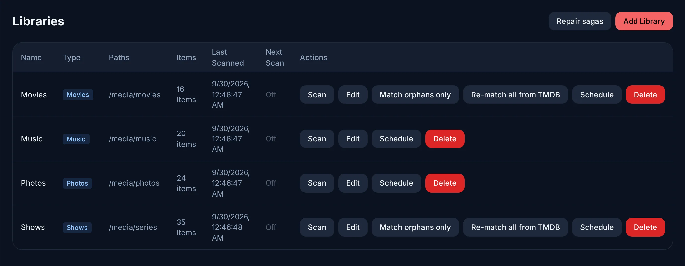

Bibliotheken und Metadaten¶
Eine Bibliothek ist eine Art von Medien (Filme, Serien, Musik oder Fotos) in einem oder mehreren Ordnern. Evey liest die Ordner, erkennt jede Datei an ihrem Namen und holt ihre Angaben aus dem Internet: Titel, Inhaltsangabe, Poster, Besetzung, Bewertungen. Diese Angaben heißen Metadaten. Für Filme und Serien kommen sie von The Movie Database (TMDB), einer kostenlosen Online-Filmdatenbank.
Die drei Dinge, die Sie zuerst tun, stehen auf dieser Seite auch zuerst: eine Bibliothek hinzufügen, Ihre Dateien benennen, eine falsche Zuordnung korrigieren. Danach folgen: wie Scans funktionieren, Musik und Fotos, Sammlungen und die Quellen der Metadaten.

Eine Bibliothek hinzufügen¶
- Verwaltung → Bibliotheken → Bibliothek hinzufügen.
- Geben Sie ihr einen Name und einen Typ. Halten Sie Filme und Serien in getrennten Bibliotheken: Der Typ sagt dem Scanner, wonach er suchen soll.
- Wählen Sie unter Pfade einen Ordner aus der Liste, oder wählen Sie Benutzerdefinierten Pfad eingeben..., um einen einzutippen. Mit + Pfad hinzufügen fügen Sie derselben Bibliothek einen zweiten Ordner hinzu.
- Drücken Sie auf Bibliothek erstellen. Evey liest die Ordner innerhalb von ein paar Minuten. Drücken Sie in der Zeile der Bibliothek auf Scannen, um sofort zu beginnen. Poster und Inhaltsangaben kommen im Hintergrund. Eine große Bibliothek füllt sich also über einige Minuten.
| Typ | Erkannt als | Metadaten von |
|---|---|---|
| Filme | Ein Film pro Datei (oder pro Ordner) | TMDB, ergänzt durch OMDb, wenn ein Schlüssel eingetragen ist |
| TV-Serien | Serien, Staffeln, Folgen | TMDB |
| Musik | Künstler, Alben, Titel | Die Tags der Dateien; Cover aus den Dateien, dem Albumordner, Cover Art Archive (MusicBrainz), dann iTunes |
| Fotos | Alben, Bilder mit ihren Aufnahmedaten | Die Dateien |
Ordner heißen so, wie Evey sie sieht
Die Ordnerliste zeigt die Ordner so, wie Evey sie in seinem Container
sieht. Mit der Compose-Datei aus der Installation
ist Ihr Medienordner /media. Ein Ordner /srv/media/films auf Ihrem
Computer ist also /media/films in Evey. Ein zweiter Medienordner
(/media2) funktioniert genauso.
Dateien so benennen, dass sie erkannt werden¶
Der Scanner erkennt Namen wie diese:
/media/films/The Mirror (1999)/The Mirror (1999) 1080p.mkv
/media/films/Lantern.2010.1080p.BluRay.x264.mkv
/media/series/The Outpost/Season 01/The.Outpost.S01E05.720p.mkv
/media/series/Quiet Storm/Quiet.Storm.03x10.mkv
- Bei einem Film zählt vor allem das Jahr:
The Mirror (1999). - Bei einer Folge zählen die Staffel- und die Folgennummer:
S01E05oder1x05. - Zusätzliche Wörter im Namen werden ignoriert: Auflösung, Quelle, Codec,
Audio, Sprachkennungen wie
VOSTFRoderMULTI, Fassungen wie „Director's Cut“.
Enthalten Ihre Dateien ein Wort, das Evey noch nicht ignoriert, fügen Sie es
unter Verwaltung → Serverkonfiguration → Parser-Tokens hinzu: unter
Zusätzliche Qualitäts-Tokens für einzelne Wörter (HDRIP), unter
Zusätzliche Editions-Suffixe für Wortgruppen. Das gilt ab dem nächsten
Scan.
Einen falschen oder fehlenden Titel korrigieren¶
Ein Film zeigt das Poster eines anderen Films mit demselben Namen? So geht es am schnellsten:
- Öffnen Sie den Titel und wählen Sie Metadaten bearbeiten.
- Drücken Sie auf Auf TMDB identifizieren und suchen Sie den richtigen Titel.
- Drücken Sie auf Diese Zuordnung verwenden.
Weitere Möglichkeiten in Metadaten bearbeiten:
- Ein Feld von Hand ändern. Ein Wert, den Sie ändern, bleibt erhalten: Spätere Aktualisierungen überschreiben ihn nicht. Wenn Sie die TMDB-ID oder die IMDB-ID ändern, werden beim Speichern die Angaben zu dieser ID geholt.
- Metadaten aktualisieren holt die Angaben zur aktuellen Zuordnung neu.
- Metadaten zurücksetzen und Metadaten neu zuordnen fangen wieder beim Dateinamen an und verwerfen Ihre Änderungen. Zurücksetzen entfernt außerdem die Bilder und die Besetzung, bei einer Serie auch die Staffeln und Folgen.
Für eine ganze Bibliothek bietet die Zeile unter Verwaltung → Bibliotheken:
- Nur nicht erkannte Dateien abgleichen versucht es noch einmal mit den Dateien, die nie erkannt wurden. Das geht schnell.
- Alle erneut mit TMDB abgleichen sucht jeden Titel neu. Das dauert. Nutzen Sie es, nachdem Sie viele Dateien umbenannt haben.
- Reihen reparieren ordnet Filme, die zu keiner Sammlung gehören, wieder ihrer Filmreihe zu, wenn die anderen Filme der Reihe schon in der Bibliothek sind.
Wie neue Dateien gefunden werden¶
Sie müssen nichts tun: Eine neue, umbenannte oder gelöschte Datei erscheint innerhalb weniger Minuten in Evey.
Um das zu erzwingen oder einen regelmäßigen vollständigen Scan einzurichten, nutzen Sie die Zeile der Bibliothek:
| Aktion | Was sie tut |
|---|---|
| Scannen | Liest die Ordner sofort. Die Zeile zeigt Wird gescannt..., dann das Ergebnis. Ein Ordner, der nicht gelesen werden konnte, wird genannt. |
| Zeitplan | Ein vollständiger Scan Alle 6 Stunden, Alle 12 Stunden, Täglich (3 Uhr), Wöchentlich (Sonntag 3 Uhr) oder nach einem Cron-Ausdruck. |
Wie der Server die Ordner prüft
- Der Server liest jede Bibliothek bei jedem Start, danach alle 2 Minuten (Verwaltung → Serverkonfiguration → Servereinstellungen → Intervall für periodischen Scan, wirksam nach einem Neustart). Solange etwas abgespielt wird, wartet er 15 Minuten zwischen zwei Durchgängen, damit er die Wiedergabe nicht bremst.
- Das System kann ihm auch melden, wenn sich eine Datei ändert (Verwaltung → Serverkonfiguration → Servereinstellungen → Bibliotheks-Dateiüberwachung), und zwar für die Bibliotheken, bei denen die Echtzeitüberwachung eingeschaltet ist. Um zu prüfen, dass das noch funktioniert, schreibt er für ein paar Sekunden eine kleine Testdatei in den Ordner. Eine Bibliothek, bei der das nachweislich funktioniert, wird nur noch einmal pro Stunde gelesen statt alle 2 Minuten.
- Bibliotheken, die im Verwaltungsbereich angelegt wurden, nutzen die Dateiüberwachung nicht: Die Durchgänge alle 2 Minuten finden ihre Dateien.
Netzwerkfreigaben
Auf einer NFS- oder SMB-Freigabe schickt eine Datei, die ein anderer Rechner geschrieben hat, kein Signal an den Server. Die regelmäßigen Durchgänge finden sie.
Musikbibliotheken¶
Der Scanner liest MP3-, FLAC-, M4A-, OGG-, Opus-, WAV- und AAC-Dateien und entnimmt jeden Titel seinen Tags: Titel (der Dateiname, wenn er fehlt), Künstler, Albumkünstler, Album, Jahr, Titel- und CD-Nummer, Genre. Künstler werden nach Albumkünstler gruppiert, oder nach Künstler, wenn dieses Tag leer ist.
Ein Album ist ein Ordner. Legen Sie jedes Album in einen eigenen Ordner.
Evey gruppiert Titel nach dem Ordner, in dem sie liegen, nicht nach ihrem
Album-Tag. Zwei Ordner mit demselben Album-Tag ergeben also zwei Alben, und
ein Album, das auf die Unterordner CD1 und CD2 verteilt ist, erscheint als
zwei Alben. In einem Album sind die Titel nach CD-Nummer sortiert, dann nach
Titelnummer, und das Album trägt den Namen, den die meisten seiner Titel
tragen.
Das Cover ist das Bild, das in den Dateien steckt. Sonst ist es ein Bild im
Albumordner (cover.jpg, folder.jpg oder front.jpg), sonst kommt es von
Cover Art Archive (gefunden über MusicBrainz), sonst von iTunes.
Fotobibliotheken¶
Der Scanner liest JPEG-, PNG-, HEIC-, WebP-, GIF-, TIFF- und BMP-Dateien. Das Album eines Fotos ist sein Ordner, gesehen vom Ordner der Bibliothek aus. Ein Foto direkt im Bibliotheksordner hat kein Album. Wenn Sie eine Datei in einen anderen Ordner verschieben, landet sie beim nächsten Scan in diesem Album. Aufnahmedatum und Kameramodell kommen aus den EXIF-Daten von JPEG-Dateien; die anderen Formate werden ohne diese Angaben aufgeführt. Vorschaubilder werden auf dem Server verkleinert und im Transkodierungs-Cache aufbewahrt.
Sammlungen¶
Sammlungen fasst Titel unter einem Namen zusammen, für alle Konten. Es gibt drei Arten:
- TMDB-Sammlungen: die Filmreihen. Sie füllen sich von selbst, wenn TMDB einen Film einer Reihe zuordnet. Reihen reparieren (siehe oben) holt Filme nach, die ihre Reihe verpasst haben.
- Neue Sammlung: eine Liste, die ein Administrator von Hand füllt, mit Zu Sammlung hinzufügen auf einem Titel oder einer Auswahl, und die er ordnet.
- Neue Smart-Sammlung: Regeln zu Genre, Jahr, Typ, Bewertung ≥ und Bibliothek, die ein Titel alle erfüllen muss. Ihr Inhalt wird bei jedem Öffnen neu ermittelt. Neue Titel erscheinen also, ohne dass Sie etwas tun.
Nur Administratoren legen Sammlungen an und bearbeiten sie. Alle können sie durchsehen. Sammlung herunterladen im Web lädt die Originaldateien als eine ZIP-Datei herunter (bis zu 1000 Titel). Was der Bibliothekszugriff oder die Altersgrenze des Kontos verbirgt, bleibt außen vor.
Metadaten-Schlüssel¶
Evey bringt einen TMDB-Schlüssel mit, Metadaten funktionieren also ohne Einrichtung. Andere Quellen sind freiwillig. Um sie zu nutzen, holen Sie sich bei diesem Dienst einen Schlüssel (eine Art Passwort) und fügen ihn unter Verwaltung → Serverkonfiguration → API-Schlüssel ein. Ein dort eingetragener Schlüssel hat Vorrang vor demselben Schlüssel aus der Umgebung (siehe Umgebung: Bibliotheken und Metadaten).
| Schlüssel | Bringt |
|---|---|
| TMDB (Ihr eigener) | Ein eigenes Kontingent an Anfragen statt des geteilten. |
| OMDb | Eine zweite Quelle für Filme, über die TMDB wenig weiß. |
| OpenSubtitles | Suchen und Herunterladen von Untertiteln, die eine Datei nicht mitbringt, über die API des Servers (die Apps bieten das noch nicht an). Siehe Untertitel. |
| TheIntroDB | Zeitmarken für Intro, Rückblick und Abspann aus einer Community-Datenbank: 500 Abfragen pro Tag mit Schlüssel statt 100 ohne. |
Intro, Rückblick und Abspann¶
Evey findet Intro, Rückblick und Abspann von Folgen und Filmen, damit die Player anbieten können, sie zu überspringen. Die Zeitmarken kommen aus Community-Datenbanken (TheIntroDB, dann IntroDB), wenn diese den Titel kennen. Sonst ermittelt der Server sie, indem er die Dateien analysiert. Ein Administrator kann sie für einen Titel von Hand anpassen oder die Erkennung neu starten.
Die Player zeigen standardmäßig die Schaltflächen Intro überspringen, Rückblick überspringen und Abspann überspringen. Intros automatisch überspringen (Verwaltung → Serverkonfiguration → Servereinstellungen, standardmäßig aus) lässt jeden Player sie von selbst überspringen.